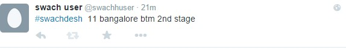
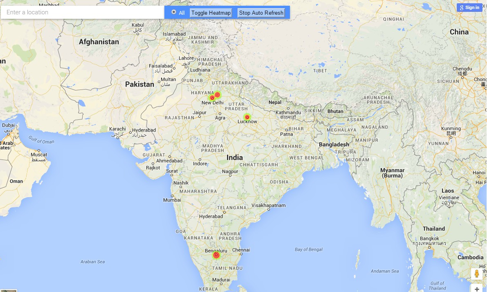
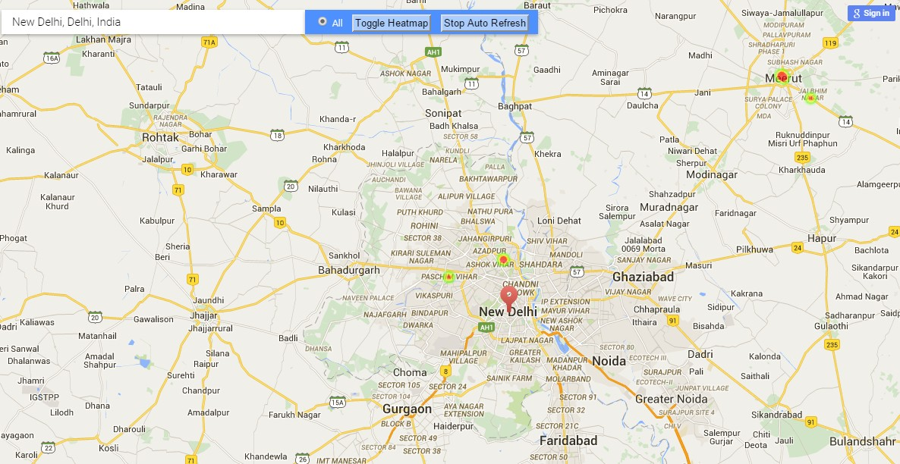
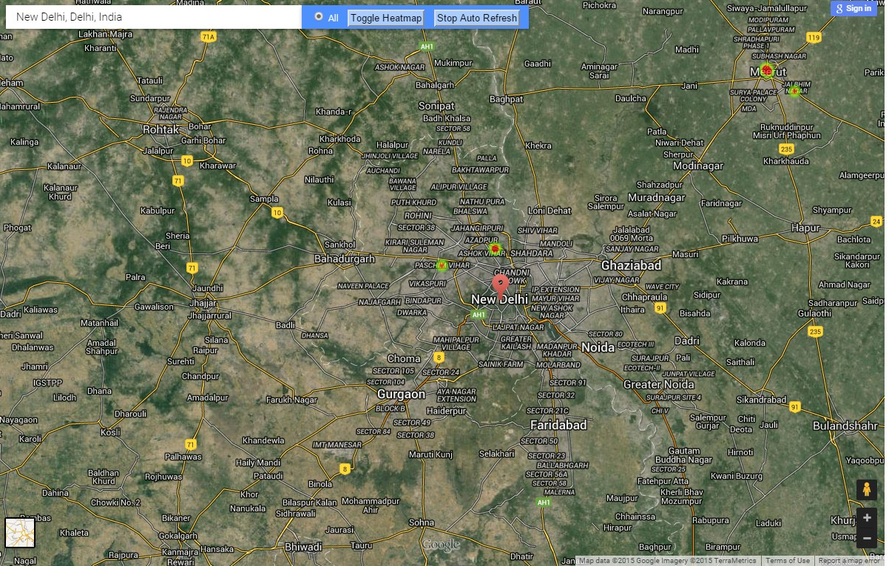

Welcome to Sucks .
Steps to Suck
Use the hashtag #swachdesh to tweet from your twitter account. This has a particular syntax which needs to be followed .
Tweet Syntax
#swachdesh dirty-meter(1-10) city locality-details
-
#swachdesh 1 bengaluru BTM layout
-
#swachdesh 1 bengaluru BTM layout 2nd stage
-
#swachdesh 1 Chennai Egmore Spencer Plaza
dirty-meter(1-10) - Range is from 1-10 with 10 being the worst and 1 being clean
city - Name of the City for cleaning
locality-details name of the locality where you need to clean.We can provide up to 4 words for the locality details. Please note out of 4 words atleast 1 word is mandatory. Remaining 3 words are optional.
- Ex - BTM 2nd stage
- BTM layout 2nd stage
please make sure we pass a spaces between the words. Any wrong format will result in a format validation which will be tweeted back to you as a notification
Any wrong format will result in a format validation which will be tweeted back to you as a notification

Example Tweets

Steps to check the maps
-
Follow the Google maps with a search provided for looking in details of heatmap populated in area
-
This map refeshes after an iterval of every 2 minutes. You can turn off the refresh by clicking the button "Stop Auto Refresh"
-
You might need to toggle the heatmap by clicking the "Toggle Heatmap" button for checking the heatmaps in India.
- 
- 
- 